Fourteen theme worlds
Each world is its own ink, its own face, its own character — a switch reskins the glyph shapes, not just the color. Curated like the engines of an OP-1: a handful you would actually live in.
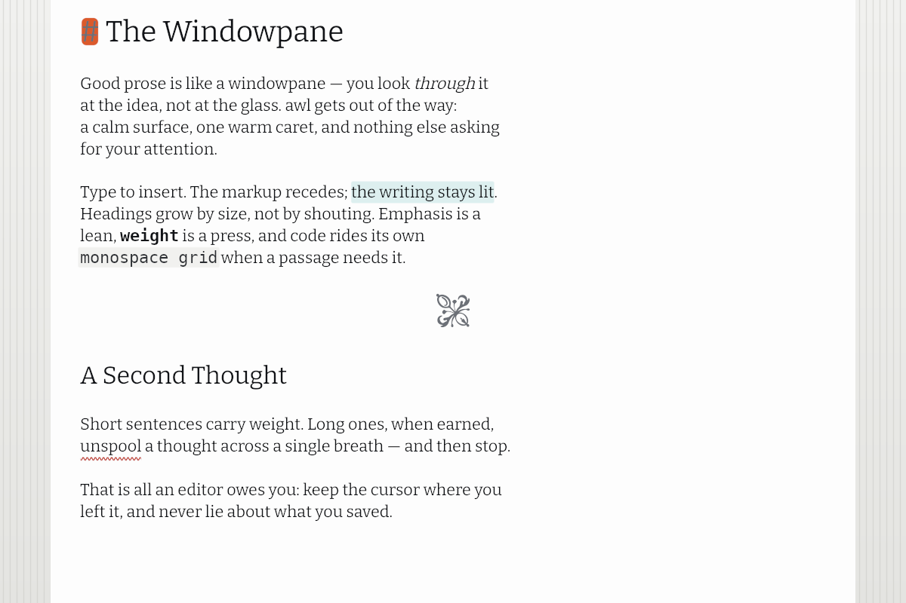
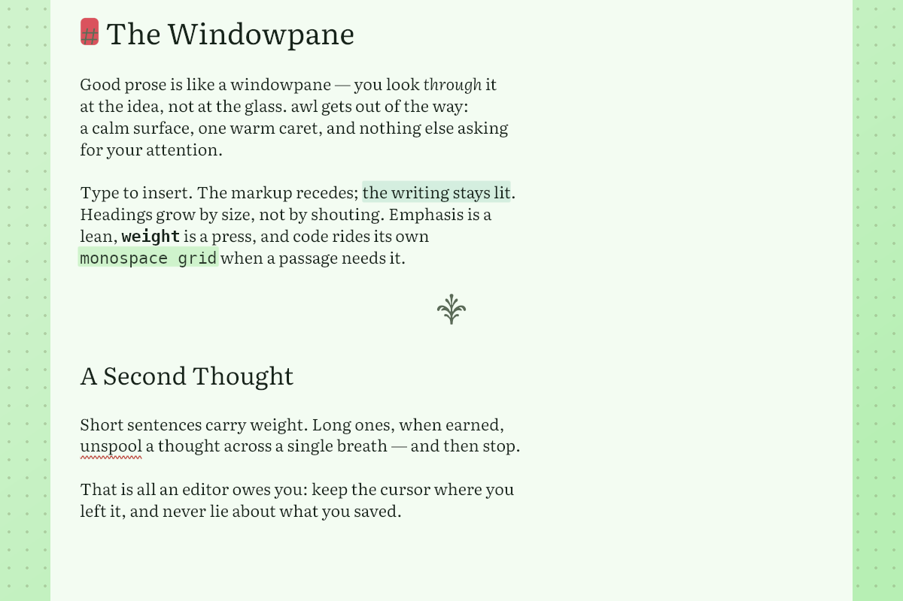
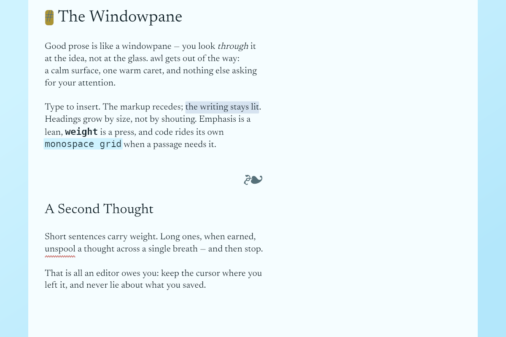
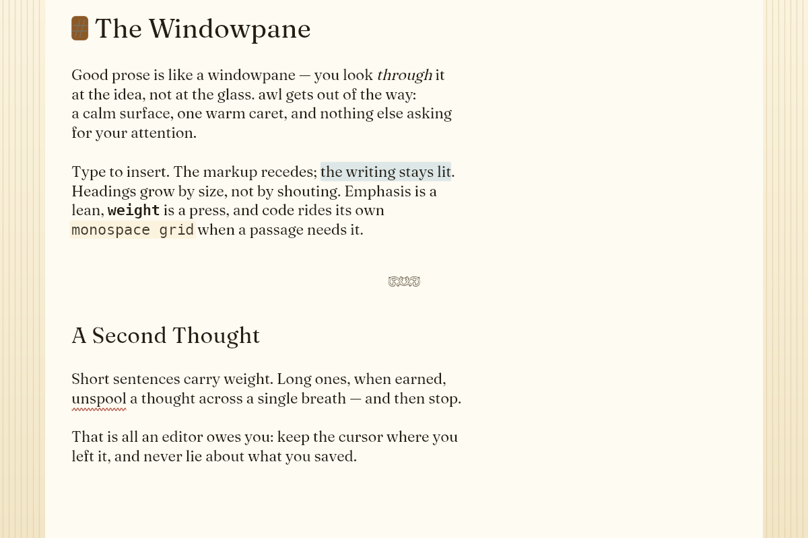
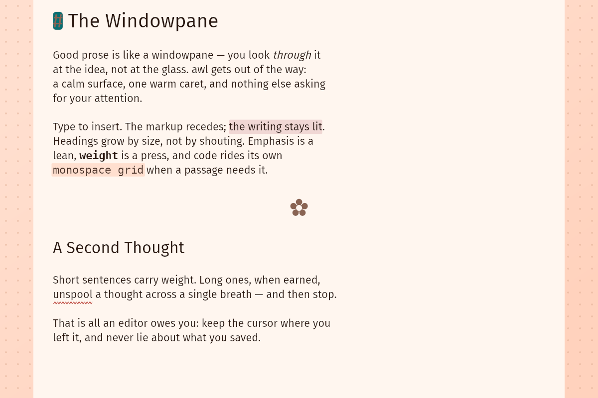
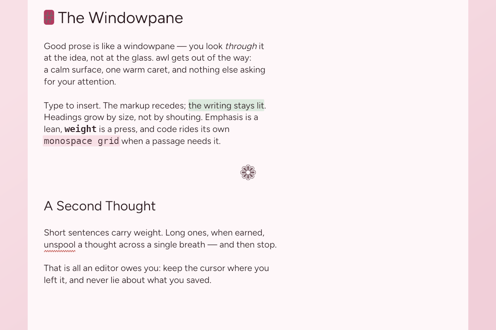
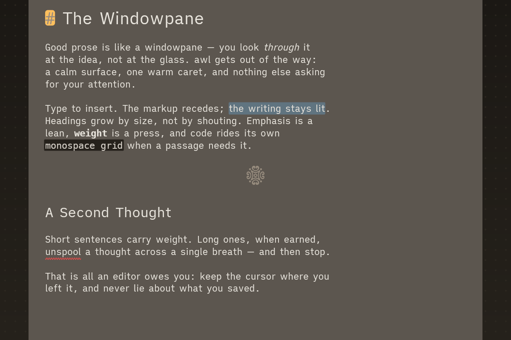
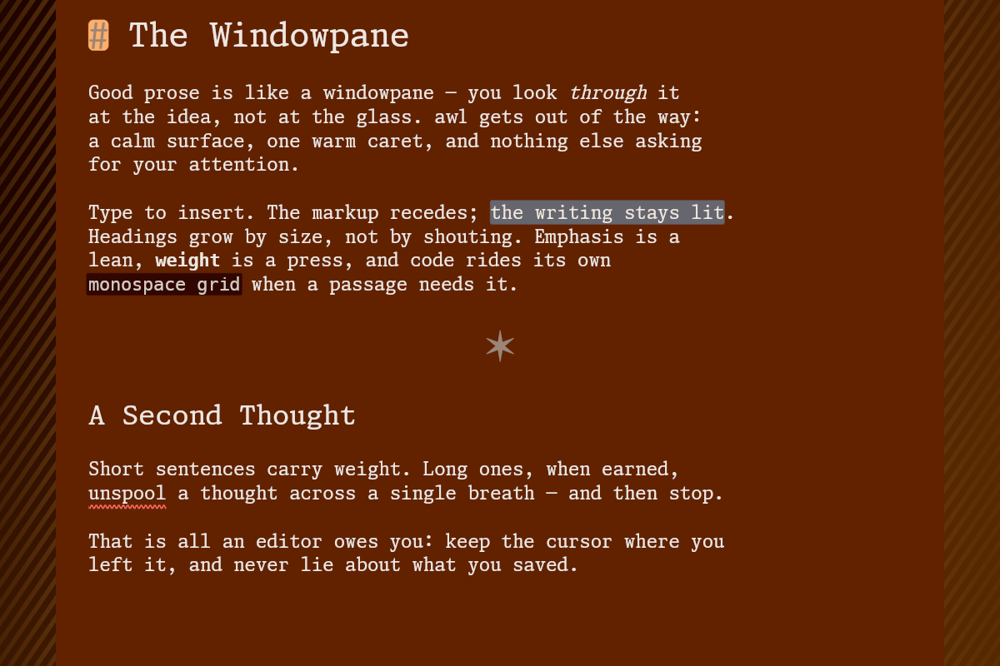
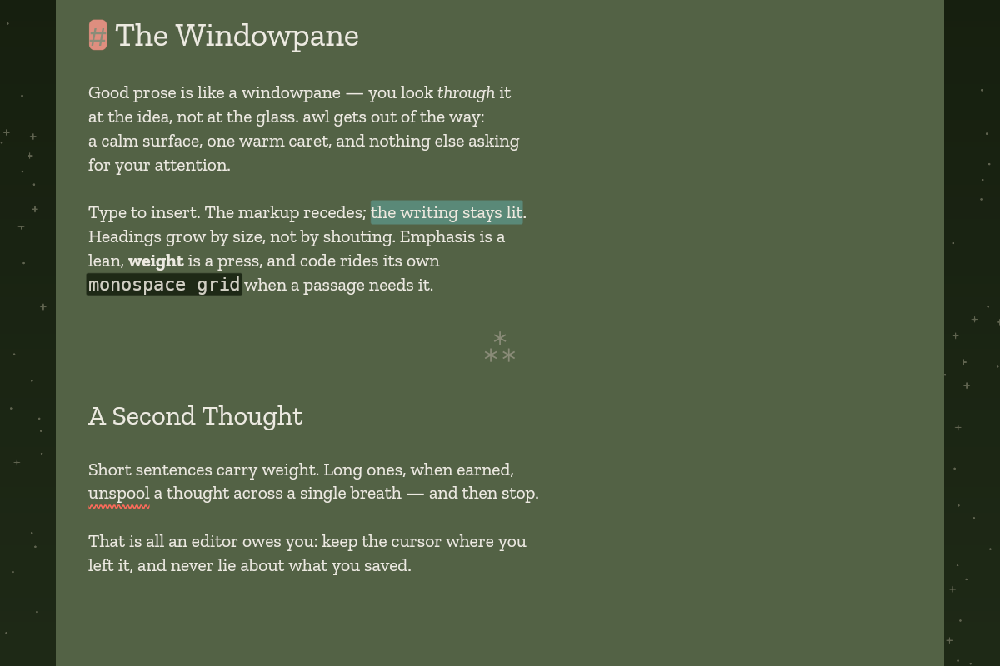
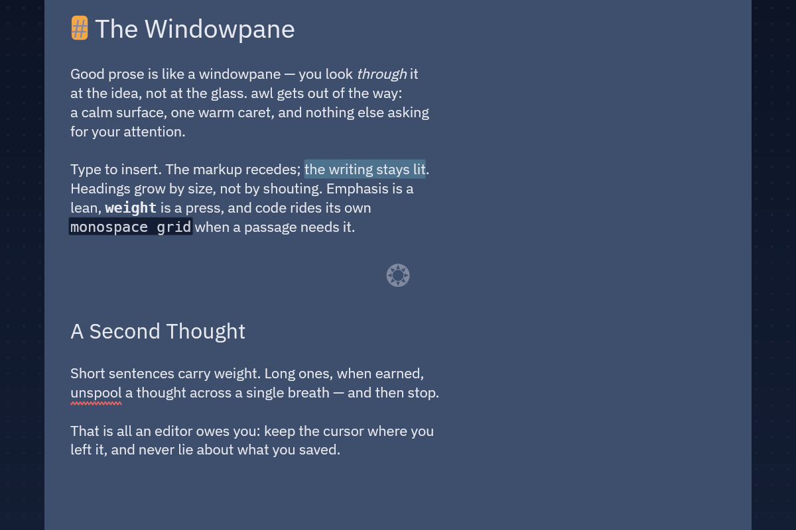
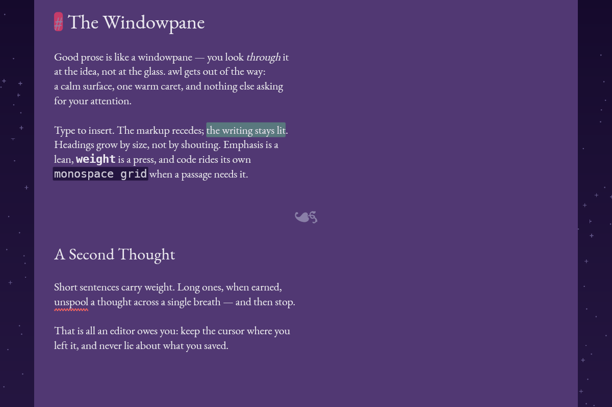
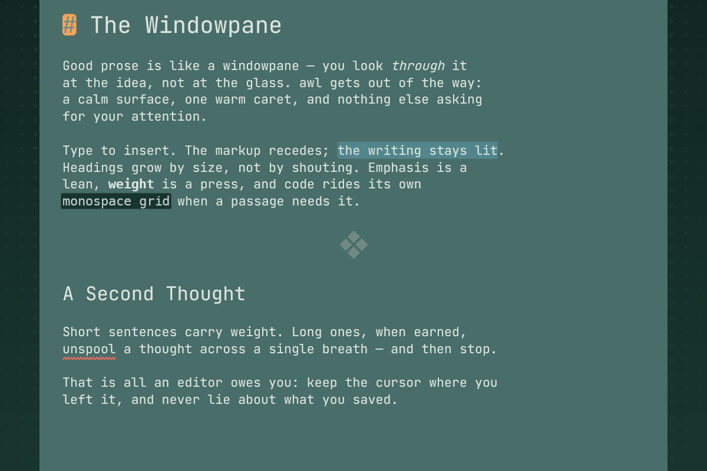
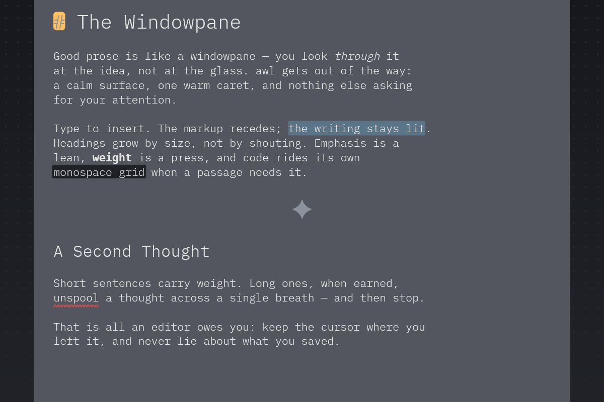
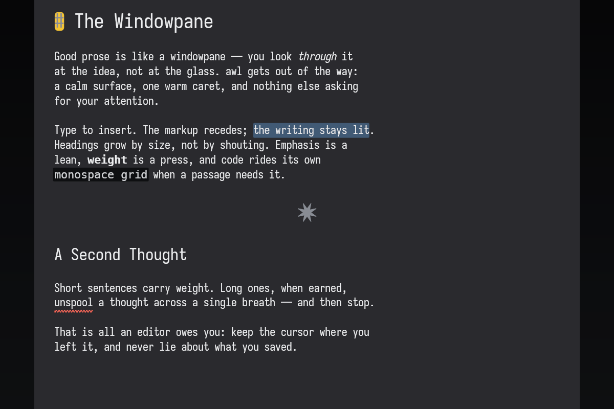
Three words, treated as constraints
The content, nothing in front of it. No sidebar, no tab strip, no toolbar — every surface is summoned and transient, gone the moment you are done with it.
Sparseness over density. One warm living thing — the amber caret, you — and everything else is figure and ground by value, on two type ladders of one ink × one size.
An instrument you play, not an appliance you operate. Juice done cheaply, and idle at zero percent CPU — alive when you act, perfectly still when you don't.
The full why lives in the repo docs — PHILOSOPHY, DESIGN, SCOPE.
Where the line is drawn
The quick fix, the gitignored .env, the note in a work repo. Minimal structure for reading code by — none of the machinery an IDE wears as furniture.
==highlight==, task lists. The markup shows only on the caret's own line.